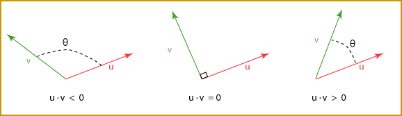
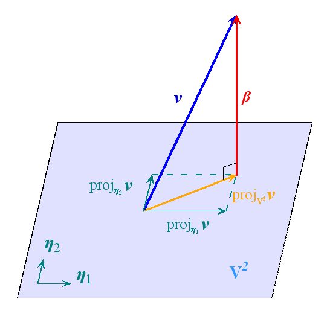

内积空间，旧称酉空间【旧，指几十年前，哈哈哈】，又名准希尔伯特空间。内积空间是增添了内积结构的向量空间，内积空间的定义是：
定义（内积空间）： 对于任意标量域 F={R,C}，标量域 F 上的任意向量空间 V=Fn={Rn,Cn}，在 V 上定义一个映射
⟨⋅,⋅⟩:V×V→F称为内积，若对于 ∀x,y,z∈V and ∀c∈F，如果
- 具有非负性：⟨x,x⟩≥0 且 ⟨x,x⟩=0 iff x=0；
- 对第一个元素线性，可加性：⟨x+y,z⟩=⟨x,z⟩+⟨y,z⟩；
- 对第一个元素线性，齐次性：⟨cx,y⟩=c⟨x,y⟩；
- 具有共轭对称性：⟨x,y⟩=⟨y,x⟩；
则该向量空间是一个内积空间。
性质（第二个元素的半线性）： 从第一个元素的线性特性，结合共轭对称性，我们其实可以证明第二个元素的反线性（半线性），对于 ∀x,y,z∈V and ∀c∈F，我们有
⟨x,cy⟩=⟨cy,x⟩=c⟨y,x⟩=cˉ⋅⟨y,x⟩=cˉ⟨x,y⟩同理，
⟨x,y+z⟩=⟨y+z,x⟩=⟨y,x⟩+⟨z,x⟩=⟨y,x⟩+⟨z,x⟩=⟨x,y⟩+⟨x,z⟩这样我们得到了第二个元素的反线性。因此，内积实际上为半双线性形式。
例子： 对于一个函数空间，我们通常定义内积为
⟨f,g⟩=∫abf(t)g(t)dt的形式，它事实上是从离散的向量空间到连续的向量空间的推广
例子： 对于一个向量空间 Rn，我们通常定义内积为
⟨x,y⟩=y⊤x.
例子： 对于一个向量空间 Cn，我们通常定义内积为
⟨x,y⟩=y∗x.
所以对于任意 Fn 且 F=R 或 F=C，
⟨x,y⟩=[y1⋯yn]⎣⎡x1⋮xn⎦⎤=j=1∑nxjyj
同时，内积的加入使得向量的“长度”和“夹角”变得可定义，然后将引出向量的正交性。下面，我们将会讨论这三个概念。
内积将一对向量映射到了一个标量，这首先就让我们想到了距离，于是我们对向量空间的范数做一个定义。
定义（范数映射）： 对于任意内积空间 V 及向量 v∈V，定义该内积空间的范数映射为
∥⋅∥:V→R;∥v∥↦⟨v,v⟩1/2
由于 a1/2=a 我们也可以写成
∥⋅∥:V→R;∥v∥↦⟨v,v⟩
定义（范数空间）： 对于内积空间 V，有内积 ∥⋅∥:V→R，如果对于 ∀u,v∈V 和 ∀c∈F，我们有
- ∥u∥⩾0 且 ∥u∥=0 iff u=0；
- ∥cu∥=∣c∣∥u∥；
- 三角不等式，∥u+v∥⩽∥u∥+∥v∥。
那么我们称这个内积空间 V 是一个范数空间。
范数和内积满足柯西-施瓦茨不等式【Cauchy-Schwarz】，对于 x,y∈V，
∣⟨x,y⟩∣≤∥x∥⋅∥y∥=⟨x,x⟩1/2⋅⟨y,y⟩1/2
通过范数我们可以进一步得到测度。
定义（测度）： 定义向量空间 V 上的测度为
d(x,y):=∥x−y∥.
范数也可以反过来定义内积。
这里有取 V=R2 为例：

我们有
⟨u,v⟩=∥u∥∥v∥cosθ
对于第一个图中的钝角
⟨u,v⟩=⟨−u,v⟩=∥u∥∥v∥cos(180∘−θ)
而对于最后一张图中的锐角
⟨u,v⟩=⟨u,v⟩=∥u∥∥v∥cosθ
定义（角度）： 对于 u,v 是向量空间 V=Rn 中的向量，其夹角为
θ=arccos(∥v∥⋅∥w∥⟨u,v⟩)=arccos(⟨∥v∥1v,∥w∥1w⟩)既然可以推导出单位向量的内积，根据向量空间内积的齐次性 ⟨cx,y⟩=c⟨x,y⟩ 和共轭对称性：⟨x,y⟩=⟨y,x⟩，我们可以推广到两个向量的线性生成，即对于 x∈span{v} 和 y∈span{u}
θ(u,v)=θ(x,y).
内积允许我们定义向量空间中的角度，因此像平面几何和立体几何中在二维和三维欧几里德空间里建立直角坐标系一样，我们可以在内积空间里建立类似直角坐标的结构。
定义（正交）： 正交是是垂直这一直观概念的推广，对于有限维度的向量空间 V 有 dimV<∞，那么 x,y∈V，当
⟨x,y⟩=0我们称之为正交的，写作
x⊥y.对于一组向量 u1,⋯,um∈V，当
⟨ui,uj⟩=0∀i=j我们同样称之为正交的。
定义（正交基）： 对于有限维度的向量空间 V 有 dimV<∞，对于一组基 e1,⋯,em∈V，当
⟨ei,ej⟩=0∀i=j我们称之为 V 的一组正交基。
引理： 对于一组向量 u1,⋯,um∈V，如果它们是正交的且非零的，那么它们一定是线性独立的。
定义（克罗内克函数）：
δi,j={10 if i=j if i=j
定义（规范正交）： 对于有限维度的向量空间 V 有 dimV<∞，对于一组向量 u1,⋯,um∈V，当
⟨ui,uj⟩=δij∀i,j我们称之为规范正交。
定义（规范正交基）： 对于有限维度的向量空间 V 有 dimV<∞，对于一组基 e1,⋯,em∈V，当
⟨ei,ej⟩=δij∀i,j我们称之为 V 的一组规范正交基。
命题： 假设子空间 W≤V 有一组规范正交基 u1,…,um，∀x∈W，有
x=j∈[m]∑⟨x,uj⟩uj.
命题（内积空间的 Fm 同构） 定义算符 T:W→Fm，令
T(x)=[⟨x,uj⟩]j∈[m],则 T 是内积空间的同构，T 的逆是
T−1([cj])=j∑cjuj.

定理（格拉姆-施密特正交化）【Gram–Schmidt】： 对于有限维度的向量空间 V 有 dimV<∞，有一组基 e1,⋯,em∈V
算法（格拉姆-施密特正交化）【Gram–Schmidt process】： 对于有限维度的向量空间 V 有 dimV<∞，有一组基 e1,⋯,em∈V
引理（柯西-施瓦茨不等式）【Cauchy-Schwarz inequality】：
∣⟨x,y⟩∣≤⟨x,x⟩1/2⋅⟨y,y⟩1/2=∥x∥⋅∥y∥.
引理（平行四边形定则）：
∥x+y∥2+∥x−y∥2=2∥x∥2+2∥y∥2.